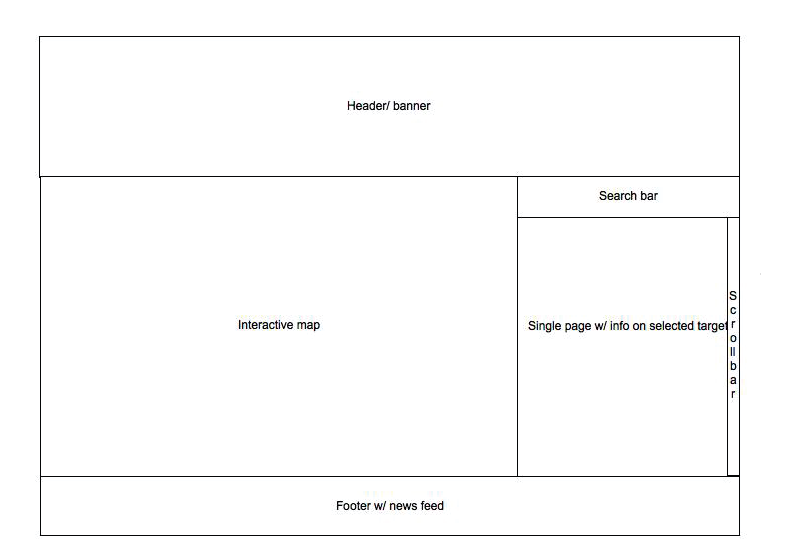
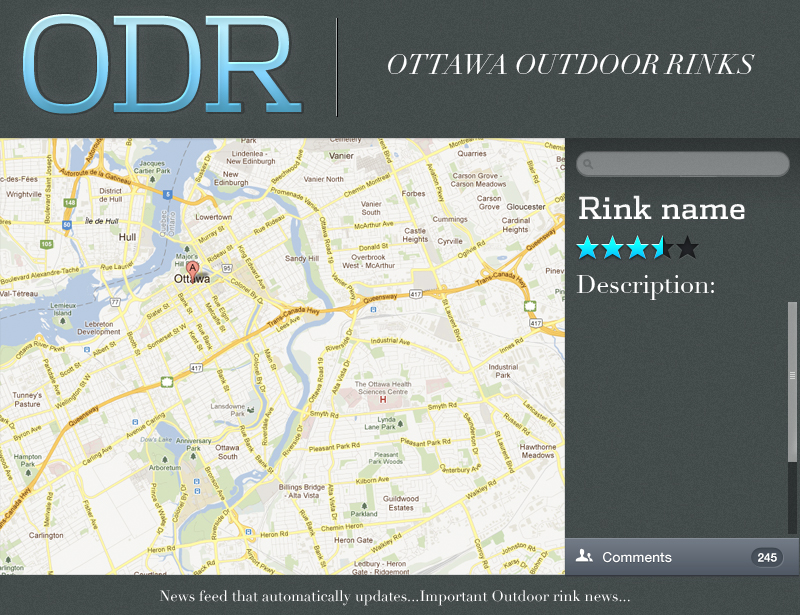

Welcome to the hub of everything you need to know about Ottawa's Outdoor Rinks! Through this website you will find an interactive map on the location of Ottawa's Outdoor Rinks. Also included will be the ice conditions, so you can plan ahead for your game of shinny!
Here are some important links:
User Persona
Who:
Female & Male ages 15 to 25.
Context:
This app will run seasonally during the winter months. It will only convey to the Ottawa region. It will also be optimized for all browsers.
Purpose:
To deliver a user friendly application where the user can look for/ find outdoor rinks in Ottawa including their conditions.
Who:
Female & Male ages 15 to 25.
Site Map
Wireframe
Prototype
